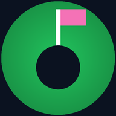
Mini Golf Guardians
Putt your way through 11 hand-painted worlds and 220 holes, from a sunny meadow to lava fields and frozen peaks. Every world ends with a guardian you beat in its own way: sneak past a sleeping giant, catch the Kraken's lantern, topple a golem or power down a Yeti mech.
The worlds
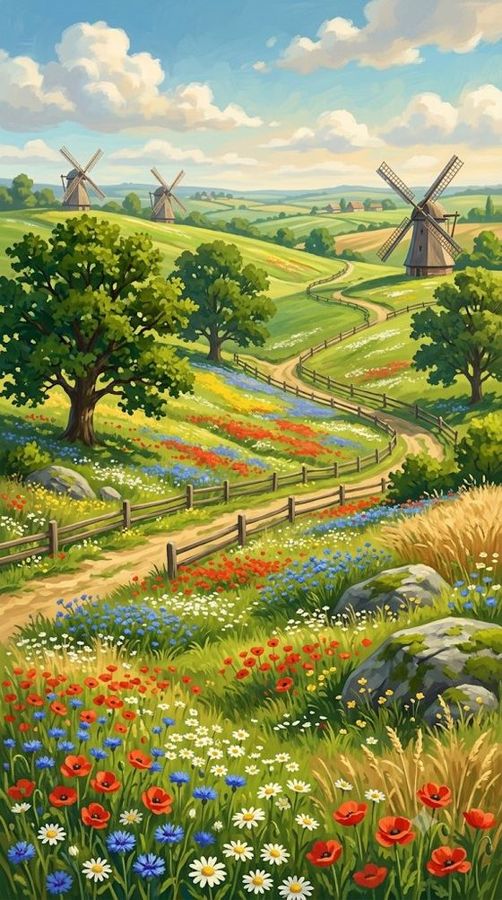
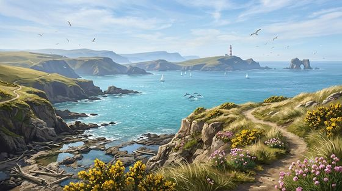
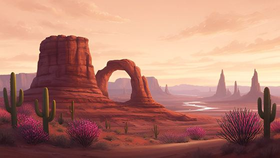
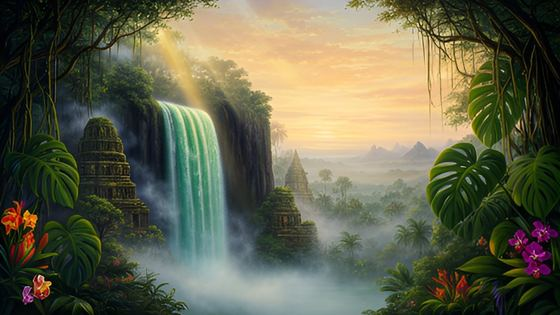
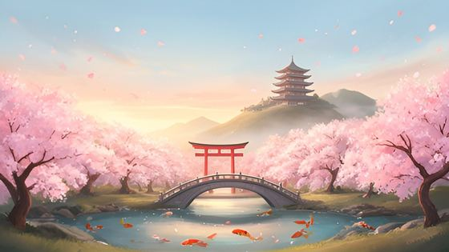
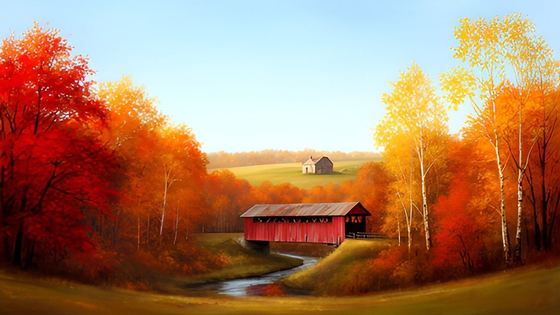
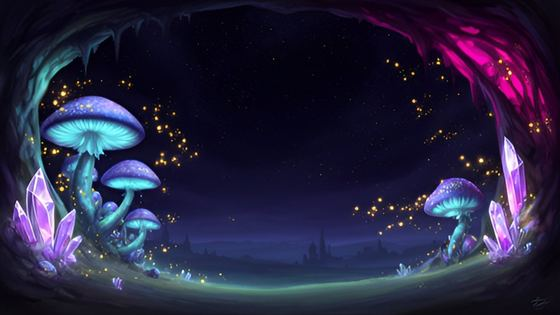
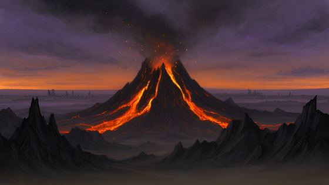
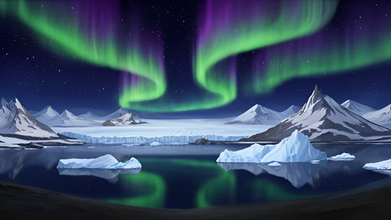
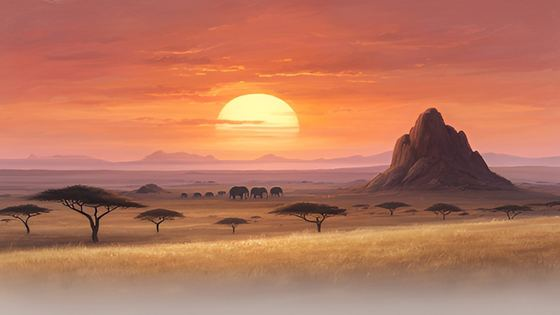
What's inside
- 220 holes, each one a different shape, with real hazards, ramps, bridges and moving pieces
- A unique guardian fight at the end of every world, and each guardian attacks with its own power
- Hidden gems on every hole, daily missions and a login streak
- Pro tees: beat a world to unlock its holes again, mirrored and at dusk
- Our own original music for every world
- Worlds 1–3 are free; later worlds unlock with coins you earn by playing, or a small purchase
Support
minigolfguardians@gmail.com
We read every message.
How do I get my purchases back on a new phone?
Open the shop and tap Restore purchases, signed in with the same App Store or Google Play account you bought with.
How do I turn off sound, music or vibration?
Tap ⚙️ on the world menu, or pause during a hole. Sound effects and music switch on and off separately.
Can I remove the ads?
Yes. The Remove Ads purchase turns off the ads between holes. Ads you choose to watch for a reward stay available.
How do I delete my data?
Your progress is stored only on your phone. Deleting the app deletes it. There is no account and nothing is stored with us.
Privacy Policy · Terms of Use · Mini Golf Guardians is made by Manan Shah.